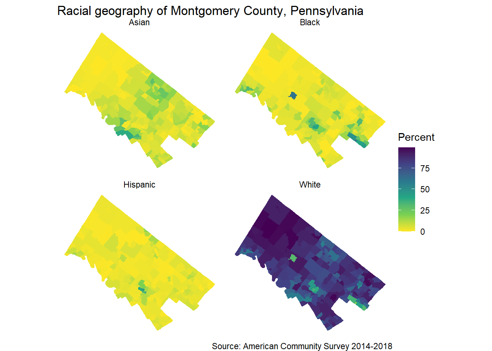

## # A tibble: 10 × 4
## name label concept geography
## <chr> <chr> <chr> <chr>
## 1 B02001_001 Estimate!!Total RACE block gr…
## 2 B02001_002 Estimate!!Total!!White alone RACE block gr…
## 3 B02001_003 Estimate!!Total!!Black or African American alone RACE block gr…
## 4 B02001_004 Estimate!!Total!!American Indian and Alaska Nat… RACE block gr…
## 5 B02001_005 Estimate!!Total!!Asian alone RACE block gr…
## 6 B02001_006 Estimate!!Total!!Native Hawaiian and Other Paci… RACE block gr…
## 7 B02001_007 Estimate!!Total!!Some other race alone RACE block gr…
## 8 B02001_008 Estimate!!Total!!Two or more races RACE block gr…
## 9 B02001_009 Estimate!!Total!!Two or more races!!Two races i… RACE block gr…
## 10 B02001_010 Estimate!!Total!!Two or more races!!Two races e… RACE block gr…## Getting data from the 2014-2018 5-year ACS## Downloading feature geometry from the Census website. To cache shapefiles for use in future sessions, set `options(tigris_use_cache = TRUE)`.##
|
| | 0%
|
|= | 1%
|
|== | 2%
|
|== | 3%
|
|=== | 4%
|
|===== | 7%
|
|====== | 8%
|
|======= | 10%
|
|======== | 11%
|
|========= | 13%
|
|========== | 14%
|
|=========== | 15%
|
|============ | 17%
|
|============= | 18%
|
|============== | 20%
|
|=============== | 21%
|
|================ | 22%
|
|================ | 23%
|
|================= | 24%
|
|================== | 26%
|
|==================== | 28%
|
|===================== | 30%
|
|======================= | 33%
|
|======================== | 34%
|
|========================== | 37%
|
|=========================== | 38%
|
|============================= | 41%
|
|============================== | 43%
|
|=============================== | 44%
|
|================================ | 45%
|
|================================= | 47%
|
|================================== | 48%
|
|=================================== | 50%
|
|==================================== | 51%
|
|===================================== | 53%
|
|====================================== | 54%
|
|======================================= | 56%
|
|========================================= | 58%
|
|========================================== | 60%
|
|============================================ | 62%
|
|============================================= | 64%
|
|============================================== | 65%
|
|============================================== | 66%
|
|=============================================== | 67%
|
|================================================ | 68%
|
|================================================== | 71%
|
|================================================== | 72%
|
|=================================================== | 73%
|
|===================================================== | 75%
|
|====================================================== | 77%
|
|======================================================= | 78%
|
|======================================================== | 80%
|
|======================================================== | 81%
|
|========================================================= | 81%
|
|=========================================================== | 84%
|
|============================================================ | 85%
|
|============================================================== | 88%
|
|=============================================================== | 90%
|
|================================================================= | 92%
|
|================================================================== | 94%
|
|=================================================================== | 95%
|
|==================================================================== | 97%
|
|===================================================================== | 98%
|
|======================================================================| 100%